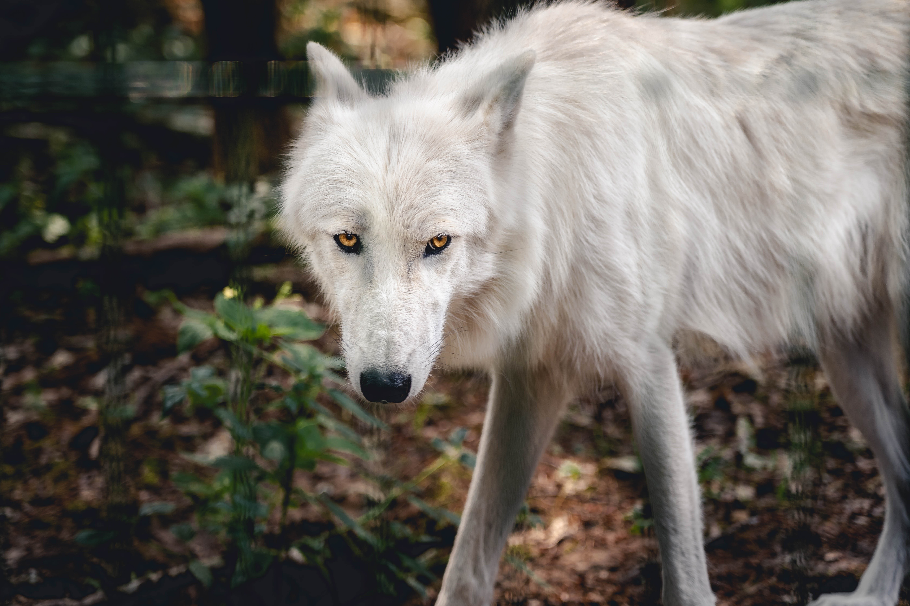
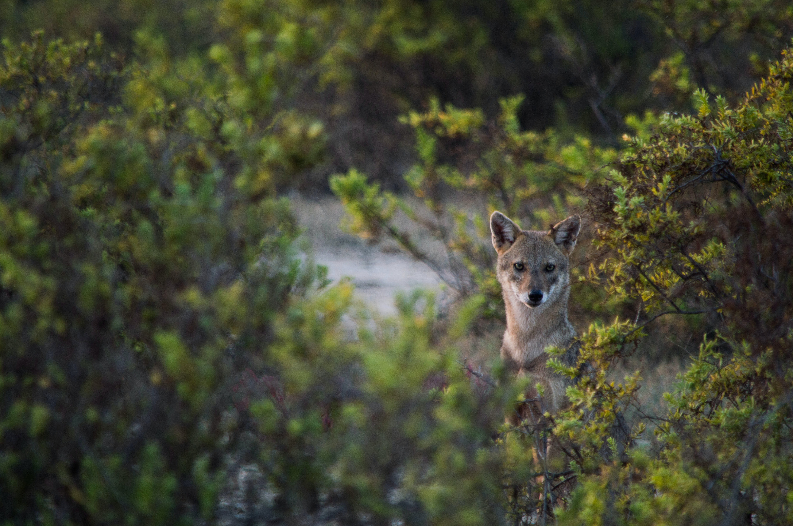

Écho de la Forêt Nocturne
Les yeux du prédateur veillent

Loup Solitaire Majestueux
Le loup danse avec la lune

Le silence de la proie
Chasser silencieusement est un art sauvage
Le loup blanc, souvent emblématique de la majesté et de la rareté, incarne la beauté sauvage des régions nordiques et des habitats enneigés.
Sa fourrure immaculée, symbole de pureté, lui permet de se fondre dans les paysages hivernaux et d'exprimer une aura mystique.
Agile et résilient, le loup blanc représente l'adaptation à des environnements exigeants, tandis que son apparence noble suscite admiration et fascination.
Souvent associé à des légendes et à des histoires folkloriques, le loup blanc évoque à la fois la force tranquille et le mystère de la nature sauvage.
Sa fourrure immaculée, symbole de pureté, lui permet de se fondre dans les paysages hivernaux et d'exprimer une aura mystique.
Agile et résilient, le loup blanc représente l'adaptation à des environnements exigeants, tandis que son apparence noble suscite admiration et fascination.
Souvent associé à des légendes et à des histoires folkloriques, le loup blanc évoque à la fois la force tranquille et le mystère de la nature sauvage.
Le loup discret se faufile à travers les recoins ombragés de la forêt, un maître de l'art de la discrétion. Sa fourrure aux nuances terreuses lui offre un camouflage parfait parmi les feuilles mortes et les branches.
Ses mouvements sont gracieux et silencieux, révélant une habileté à chasser sans être détecté.
Observateur et vigilant, il évite les regards indiscrets tout en participant activement à l'écosystème qui l'entoure.
Bien qu'il puisse passer inaperçu, sa présence subtile témoigne de l'adaptation et de la résilience de ces créatures énigmatiques de la nature.
Ses mouvements sont gracieux et silencieux, révélant une habileté à chasser sans être détecté.
Observateur et vigilant, il évite les regards indiscrets tout en participant activement à l'écosystème qui l'entoure.
Bien qu'il puisse passer inaperçu, sa présence subtile témoigne de l'adaptation et de la résilience de ces créatures énigmatiques de la nature.
Le loup, doté d'une attention intense, se déplace avec une grâce calculée.
Ses sens aiguisés et sa concentration inébranlable l'aident à traquer et à chasser avec précision.
Chaque mouvement est méthodique, chaque détail est capturé par ses yeux dorés perçants.
Sa vigilance ne se limite pas à la chasse : elle se manifeste également dans ses interactions sociales au sein de sa meute.
Le loup avec attention incarne l'harmonie entre la présence vigilante et la maîtrise de soi, soulignant l'importance de la vigilance pour survivre dans la nature.
Ses sens aiguisés et sa concentration inébranlable l'aident à traquer et à chasser avec précision.
Chaque mouvement est méthodique, chaque détail est capturé par ses yeux dorés perçants.
Sa vigilance ne se limite pas à la chasse : elle se manifeste également dans ses interactions sociales au sein de sa meute.
Le loup avec attention incarne l'harmonie entre la présence vigilante et la maîtrise de soi, soulignant l'importance de la vigilance pour survivre dans la nature.